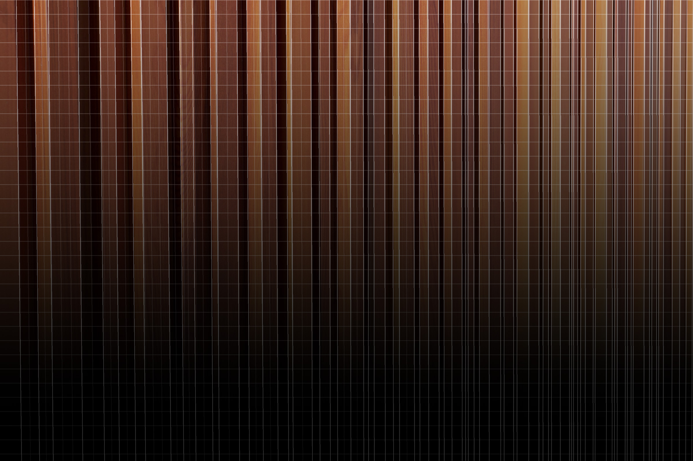
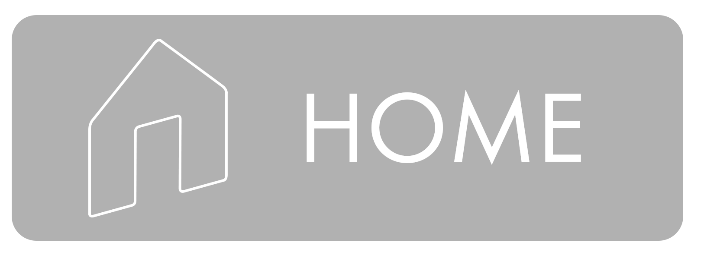

3D Preview: Drag anywhere outside the edge controls to orbit around the sample. Drag any of the four circular handles to change the sample size.
AR on a phone: Tap START AR, point at a wall and move slowly to establish tracking. The white grid is a wall-alignment aid; it estimates a wall from feature points when possible. Tap anywhere to place. Walk around to inspect. Tap REPOSITION to try again.
Automatic alignment combines a camera-image floor-seam candidate, 8th Wall's horizontal floor estimate, and 3D feature points. A white dashed line is unverified; green shows a stable estimate. If automatic detection does not confirm the wall, tap two separated points along the floor–wall edge. Both methods anchor once and remain fixed while you look away. Tracking stability and scale need device testing.